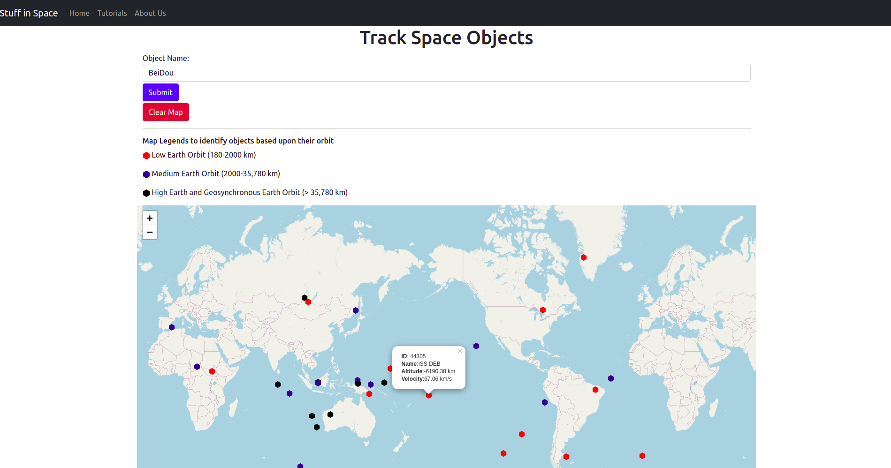

In this tutorial we explain how to use this web application.
The navigation bar helps you to navigate through different parts of this application. It is located on top of this web application.
Search bar enables you to search for all the known objects in space.
Make sure that you type specific names in the search bar.
Example: To search for known space debris type DEB in the search bar.
Any satellite or space object that has the suffix DEB is categorised as known debris for that satellite.
Example: COSMOS 2251 DEB is a space debris.
ISS (ZARYA)SAUDISATSWISSCUBEPICSAT
The map provides location of the satellite hovering above the earth surface.
The map will either show a single object or multiple obejects based upon your search.
The map will update the location of the satellite every 30 seconds.
You can zoom in on any location on the map using mouse scroll or the + sign on the map.
You can use two fingers to zoom in on the map on a touch screen device.
All the satellites remain present on the map even if you make a new search. To make a fresh search, make sure to clear the map using
You should see the satellites as follows after you hit the
